فحص القطعة 3D WebAR (تتبع مستمر لجميع الجهات)
🏛️ أمامية (Praha)
🏷️ خلفية (Kč 120)
📐 جانب أيسر
📐 جانب أيمن
🔲 علوية
عرض في الواقع المعزز (View in AR)

نماذج 3D
مسح AR
مسح AI
فحص القطعة
تعرف مغلق
EN
ع
المقتنيات
مخطوط القبسات
تحفة القمي 3D
سيف ذو الفقار
طاسة سقاخانة
محراب الصلاة
لوح مسماري
خوذة إسلامية
خريطة بابل
مسلة حمورابي
وعاء أثري
Alqami
AR Manuscript Intelligence
Scanning for manuscript
بيانات القطعة
الوصف
الرسم البياني
المحرر
العنوان / Title
Loading...
المنشئ / Creator
Loading...
الحقبة / Period
Loading...
القياسات / Extent
Loading...
المادة / Material
Loading...
ملاحظات / Description
Loading description...
Resource
Linked Entity
Literal Property
Reset
Update AR
Align manuscript within frame
Feature Annotation
Annotation details.
Listen to Description